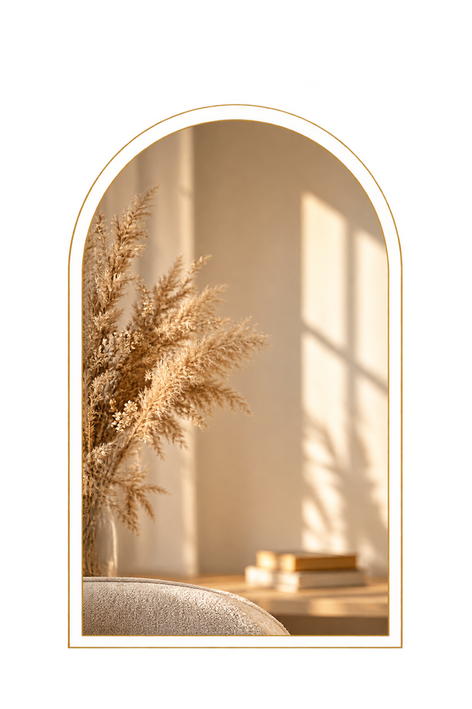

Профессиональный подход
Клиническая психологическая квалификация и внимательное отношение к запросу.
Клинический психолог · системные расстановки
Бережно исследуем повторяющиеся ситуации, отношения и внутренние противоречия — чтобы яснее увидеть свой запрос и возможные дальнейшие шаги.
Ольга Сусленникова Клинический психолог
Клиническая психологическая квалификация и внимательное отношение к запросу.
Исследуем не только отдельную ситуацию, но и её место в истории отношений.
Уважение к вашим чувствам, темпу и личным границам на каждом этапе.
Можно задать вопросы, выбрать формат и самостоятельно решить, подходит ли он вам.
Знакомство
Клинический психолог
В своей работе я соединяю профессиональную психологическую подготовку, внимание к контексту жизни человека и бережное исследование устойчивых повторяющихся ситуаций.
Мы не ищем виноватых и не подгоняем вашу историю под универсальное объяснение. Вместе формулируем запрос, исследуем то, что происходит, и смотрим, какие решения доступны сейчас.
Внимание к запросуБез готовых шаблонов
Бережная работаС уважением к границам
Два форматаОнлайн и очно
Понятные условияДо начала встречи

Подход
Формат исследовательской работы, который помогает рассмотреть отношения, привычные роли и повторяющиеся ситуации с другой точки зрения.
Это не предсказание и не готовый ответ. Выводы мы обсуждаем вместе, а решения остаются за вами.
Посмотреть форматыОпределяем, что именно хочется прояснить на встрече.
Обсуждаем формат и элементы, с которыми будем работать.
Наблюдаем за возникающими связями и впечатлениями без поспешных выводов.
Обсуждаем наблюдения и намечаем возможные следующие шаги.
ЯсностьСначала — понятный запрос
УважениеК вашему опыту и выбору
ОсознанностьБез обещаний быстрых чудес
ИнтеграцияСвязь с повседневной жизнью
С чем можно прийти
Необязательно заранее знать точный ответ или правильно формулировать проблему. Начать можно с того, что беспокоит сейчас.
Повторяющиеся конфликты, дистанция, трудности с доверием и взаимопониманием.
Ощущение обязанностей, сложные семейные связи и место человека в системе отношений.
Ситуации, в которые вы снова и снова попадаете, хотя хотите действовать иначе.
Противоречивые желания, чувство вины, тревога перед выбором или переменами.
Сложности с отказом, ощущение чрезмерной ответственности или потеря контакта с собой.
Переходный период, решение о переменах, поиск направления или новых способов действовать.
Каждый запрос рассматривается индивидуально. Если вам нужна специализированная медицинская или кризисная помощь, важно обратиться в соответствующую службу.
Форматы работы
Выберите вариант, который соответствует вашему запросу и готовности к работе.
Отдельная платная встреча, чтобы уточнить запрос и обсудить возможные варианты работы.
1 200 ₽3 500 ₽
Стоимость первой диагностической сессии — 1 200 ₽ вместо 3 500 ₽.
Уточнить деталиИндивидуальная работа онлайн, с использованием фигурок для пространственного представления запроса.
5 000 ₽
Встреча проходит в Zoom.
Уточнить деталиГрупповой формат, в котором участники помогают представить элементы запроса.
7 000 ₽
Онлайн в Zoom.
Уточнить деталиОчный групповой формат в Санкт-Петербурге.
12 000 ₽
Детали места и даты согласуются при записи.
Уточнить деталиУсловия записи
Предоплата обязательна. Отменить или перенести встречу необходимо не позднее чем за 24 часа.
Без лишней неопределённости
Сначала мы проясняем запрос и договариваемся о формате. На каждом этапе можно задавать вопросы, уточнять ощущения и обозначать границы.
Частые вопросыОбсуждаем, что привело вас на встречу и чего хотелось бы прояснить.
Задаём вопросы о ситуации, важных отношениях и обстоятельствах.
Согласуем, как будет устроена работа и что будем исследовать.
Наблюдаем за тем, что проявляется в процессе, и обсуждаем ваши впечатления.
Подводим итоги и определяем, что вы хотели бы взять с собой из встречи.
После встречи
Результат индивидуален и зависит от ситуации, запроса и многих обстоятельств. Ни один формат не гарантирует конкретных изменений.
По-новому взглянуть на ситуацию и точнее назвать то, что вас волнует.
Замечать привычные способы реагировать и повторяющиеся модели отношений.
Уделить внимание переживаниям и внутренним противоречиям.
Исследовать, где заканчивается ваша ответственность и начинается ответственность другого.
Увидеть дополнительные способы действовать в сложной ситуации.
Сформулировать, что можно спокойно обдумать, обсудить или попробовать дальше.
Ваш следующий шаг
Необязательно приходить с готовым решением. Можно начать с вопроса, который давно хочется прояснить.
Мы обсудим ваш запрос и вместе посмотрим, какой формат будет уместен.
Как записатьсяОнлайнВстречи в Zoom
ОчноСанкт-Петербург
Бережный подходС уважением к вашему темпу
Опыт клиентов
Здесь будут опубликованы подлинные отзывы — с разрешения авторов.
Текст отзыва добавим после согласования публикации.
Имя или инициалы — по согласованиюТекст отзыва добавим после согласования публикации.
Имя или инициалы — по согласованиюТекст отзыва добавим после согласования публикации.
Имя или инициалы — по согласованиюОтзывы отражают личный опыт авторов и не гарантируют аналогичный результат для других людей.
До встречи
Если вопрос остался без ответа, его можно обсудить до записи — это поможет выбрать подходящий формат.
Специальная подготовка не обязательна. Достаточно подумать, что именно хотелось бы прояснить. Если запрос пока неясен, можно начать с диагностической сессии.
Да. Диагностическая сессия — отдельная платная встреча. Она не обязывает вас сразу выбирать расстановку или другой формат работы.
Онлайн-встречи проходят в Zoom. Для индивидуальной работы на фигурках мы заранее обсудим, что понадобится и как организовать пространство.
Очный групповой формат проводится в Санкт-Петербурге. Конкретные место и дату согласуем при записи.
Требуется предварительная оплата. Подтверждённые детали и порядок оплаты согласуются до встречи.
Отменить или перенести встречу необходимо не позднее чем за 24 часа. Если обстоятельства изменились, сообщите об этом заранее.